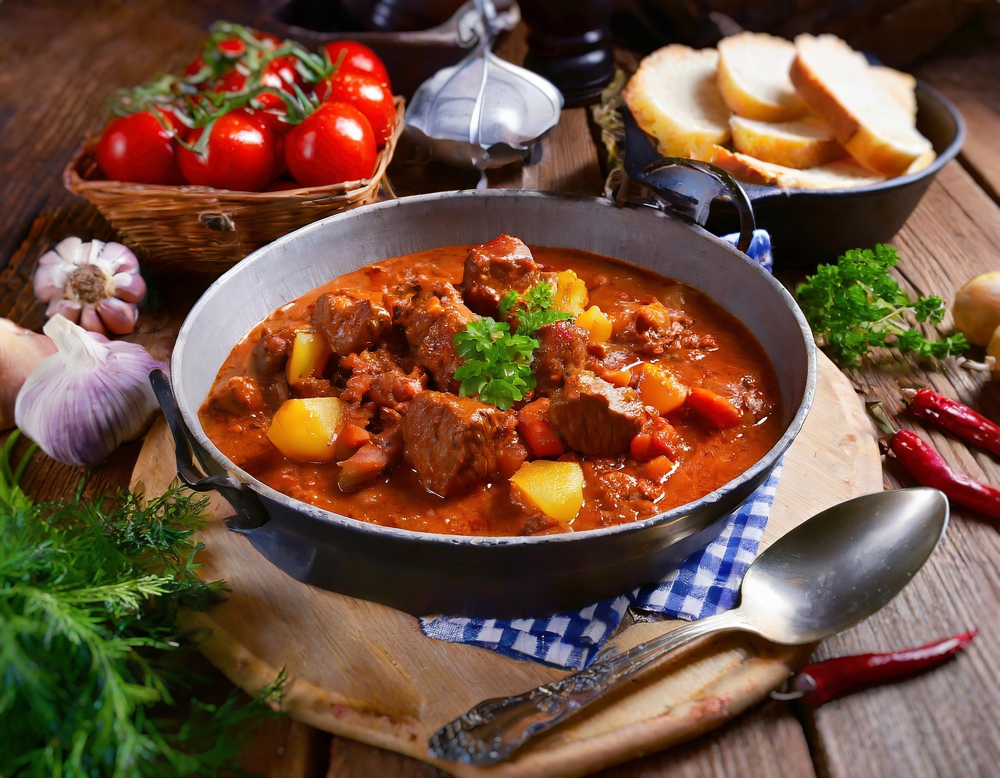

Gulaschsuppe

Zutaten für
333gSchweinefleisch, (z. B. Schinkenbraten)
333gRindfleisch, (z. B. vom Jungbullen)
2,67Paprikaschote(n), bunt
2Gemüsezwiebel(n)
2kl. DosenTomate(n), stückige
1LiterBrühe
0,33Tube(n)Tomatenmark
0,67TLZucker
Salz
Zubereitung
Das Fleisch in kleine Würfel schneiden und scharf anbraten. In der Zwischenzeit die Zwiebeln grob würfeln und mit den in Streifen geschnittenen Paprikaschoten hinzufügen. Kurz mit anbraten, mit Salz und Paprikapulver würzen und mit den Tomaten aus der Dose und anschließend mit der Brühe aufgießen. Bei geschlossenem Deckel 1 - 1,5 Stunden köcheln lassen, bis das Fleisch weich ist. Jetzt Tomatenmark dazu geben, bis die gewünschte Sämigkeit erreicht ist. Mit Salz, Cayennepfeffer und Zucker abschmecken.
Rezept erstellt von
 Frank
Frank